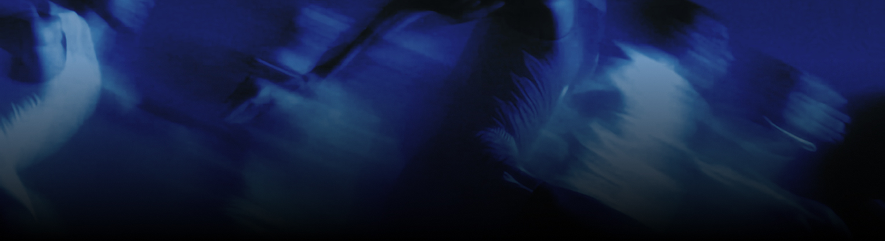
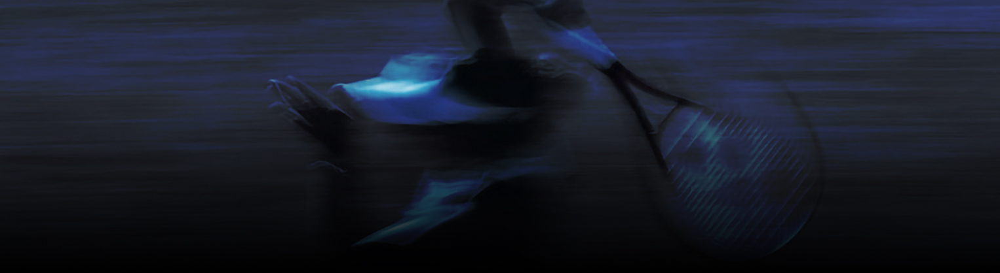

БУСТИТИ
Підсиль те, що має потенціал

Підсиль те, що має потенціал
Ви сьогодні вже щось бустили? Може, настрій? Ідею? Чи ту саму силу волі, яка зникає після трьох дедлайнів поспіль? Слово “бустити” звучить звично, але за ним стоїть відчуття руху, імпульсу, який штовхає вперед.
Бустити — це підсилювати, покращувати, збільшувати щось або когось на новий рівень.Слово походить від англійського "boost" і використовується для опису процесу покращення або збільшення чогось. У молодіжному сленгу це слово підкреслює активні дії з метою досягнення кращих результатів у будь-якій сфері.

Увійшло в українську мову разом із цифровими індустріями та стало одним із найвпізнаваніших слів сучасного сленгу. Спершу термін активно використовувався у соцмережах, а також у геймерському середовищі, де позначає швидке прокачування акаунтів/навичок. З часом слово стало універсальним й описує будь-яке прискорення чи покращення результатів.

Готові бустити те, що має значення?
Зроби маленький рух.
Почни з себе.
А далі – поділися бустом з іншими!